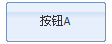

我们开始编写第一个Edo程序，如下所示：
<html> <head> <title>Hello, edojs!</title> <!--引入edo-all.css--> <link href="../../scripts/edo/res/css/edo-all.css" rel="stylesheet" type="text/css" /> <!--引入edo.js--> <script src="../../scripts/edo/edo.js" type="text/javascript"></script> </head> <body style="padding:10px;"> </body> </html> <script type="text/javascript"> //使用Edo.create方法,将一个配置对象生成为edo组件对象 Edo.create({ id: 'btn1', //组件ID type: 'button', //组件类型 width: 100, //宽度 text: '按钮A', //按钮文本内容 onclick: function(e){ //处理click事件 alert("Hello, edojs!" + btn1.text); }, render: document.body //此edo对象加入的dom元素 }); </script>
在这段代码内，我们需要注意几件事：
1.正确引用edo的css和js资源。
2.创建一个edo组件对象，必须在edo的css和js资源引用之后。
效果图如下：
EdoJS有两种创建组件的方式：一种是配置式的，如上面的示例代码；另一种是命令式的，是类似于JAVA或C#的严谨的创建方式，如下代码所示：
<script type="text/javascript"> var btn = new Edo.controls.Button(); btn.set('id', 'btn1'); //一行代码设置一个属性 btn.set('width', 100); btn.set({ //设置一个配置对象,设置多个属性 text: '按钮A', height: 40 }); btn.on('click', function(e){ //监听按钮的click事件 alert("Hello, edojs!" + btn1.text); }); btn.render(document.body); //将按钮对象最终呈现在页面 </script>
本例效果图如下：

当我们创建一个EdoJS对象后，我们在一个特定时刻，需要找到此对象，并进行其他的操作。
查找EdoJS对象有如下三种方式：
1.直接返回对象，保存到一个变量中：
var btn = Edo.create({ type: 'button', render: document.body }); btn.set('text', '按钮');
此方法不需要对象id，即可找到并使用对象，缺点是有变量作用域的限制，如函数内的对象变量，函数外就无法访问到。
2.通过Edo.get(id)方法：
Edo.create({
id: 'btn1',
type: 'button',
render: document.body
});
var btn = Edo.get('btn1');
btn.set('text', '按钮');
3.第三种方法其实跟第二种方法是一样的，只是省略了一个Edo.get方法调用代码，如下：
Edo.create({
id: 'btn1',
type: 'button',
render: document.body
});
btn1.set('text', '按钮');
这是EdoJS的一个特性：将对象id全局化。省略了对象获取代码，从而更加自然和精炼。
通过如上代码，大家应该知道，监听一个对象的事件，有两种方式：
1.第一种是配置式的，如：
Edo.create({
type: 'button',
render: document.body,
onclick: function(e){ //配置式监听对象事件
alert("Hello, edojs!" + btn1.text);
}
});
优点是书写简单，与配置对象写在一起；缺点是这种方式，只能给对象增加一个事件监听处理函数。
2.第二种是命令式的，如：
btn.on('click', function(e){ alert("Hello, edojs!" + btn1.text); }); btn.on('click', function(e){ btn.set('text', 'clicked!'); });
EdoJS组件对象被创建后，需要在页面内显示。这时候就会有一个问题，这个对象在哪里显示？
render就是控制EdoJS对象显示在哪里的。也有两种方式：
1.配置式：
Edo.create({
type: 'button',
render: document.body
});
btn.set('render', document.body); //或 btn.render(document.body);
set方法可以说是EdoJS的一个重要的核心思想：所有的组件属性，都可以通过set方法来设置，并反映到界面上。
比如，在一些其他的框架，我们要修改某个对象的文本，是这样写的：
cmp.setText('文本');
有时候会这样命名这个方法：
cmp.changeText('文本');
EdoJS的set方法，意义在于：为所有的属性操作，提供一个统一的接口。
使用者在查阅Api文档的时候，看到一个类有A/B/C等属性，那么它就会知道，直接可以通过cmp.set(‘A’, …)这种代码形式，来设置属性，无论在任何时刻！
是的，无论在任何时刻，您都可以任意对EdoJS对象设置属性！有一些框架，他们具有一个“配置对象”的概念，这个配置对象只有在对象的初始化时刻，才能进行配置。EdoJS没有“配置对象”的概念，只有“属性”，任意时刻都可以设置属性，这一点，大大降低了学习曲线。
EdoJS是一个简单、强大、高性能的跨浏览器JS组件库框架，在后续的教程中，我们将一一学习EdoJS的组件、容器、布局器、表格、树形组件等使用方式，配合Api文档，我们可以快速制作出卓越的基于web的软件!